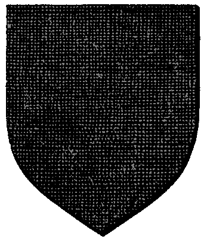

| Übersicht,
Newbies und Fragen |
|
Zwerge (1  ) )
|
Sethwyn Seitenhieb
 |
... schon wieder ich.
Ich habe gesehen, dass es Zwergensippen gibt, die sich wohl als Rollenspieler wähnen.
Ich reise mit Zwergen und wäre an Informationen zu diesem Thema interessiert, die speziell die Spielwelt Scherbenwelten betreffen.
Was haben Zwerge zu Dieben zu sagen?
Warum sollten sie einen begleiten (ich hab da zwar schon meine eigene Idee, lasse mich aber gern weiter inspirieren)?
Wie lauten allgemeine Grußformeln der Zwerge?
An wen glaubt ein Zwerg in Scherbenwelten (Gottheit)?
Wie reisen sie, wie leben sie, wie verhalten sie sich zu anderen Völkern, wie verhalten sie sich generell in Gesellschaft?
Ich würd mich freuen, wenn man mir da weiterhelfen könnte. |
02.09.10 15:49
 |
|
| Parrakus (RIP) |
Naja ich denke da wäre Kantar.. Äääähhhh die Al Ghazad (oder so) die richtige Adresse^^ |
02.09.10 15:59
|
|
Zipfelmütz von Dahén
 |
Youp, "Ar Khazâd" sind da wohl die Richtigen für. |
02.09.10 16:03
|
|
Baldur McMulenberc
 |
Alternativ "Alberix, Sohn des Duglim" anschreiben, der ebenfalls Zwergen-RPler ist. Musst nur Glück haben, dass er gerade Zeit hat^^ |
02.09.10 16:27
|
|
Kantar
 |
Lol .. Parrakus
Ar Khazâd ja die können tipps geben ^^ |
02.09.10 17:08
|
|
| Agesha Goldsucher (RIP) |
Also wir Ar Khazâd (aus der Zwergensprache Khuzdul, übersetzt: Die Zwerge) sind eine kleine Gruppe Zwerge die auf Lummerland leben und uns dem zwergischen mit Herz und Seele hingeben.
Sprachlich ist das bei den Zwergen nicht ganz so einfach da es keine komplette Zwergensprache gibt wie zb für die Elfen. Es gibt Bruchstücke und einige Sätze. Aber fliessende Texte in Khuzdul kann man nicht schreiben.
Siehe hier:
http://ardapedia.herr-der-ringe-film.de/index.php/Khuzdul
oder hier:
http://www.herren-des-westens.de/hdr_infos/khuzdul.html
Direkte Wörterbücher wie zb für Sindarin etc sind eher schwer zu finden.
Was den Glauben angeht gibt es halt auch einige Unterschiede denke ich. Es kommt drauf an auf welcher Basis man seinen Zwerg spielt. Ob man sich strickt an Grundlagen eines Buches hält oder nach eigenem belieben sich hier und da was rauszieht was einem am besten gefällt.
Auf Lummerland glauben wir an Morod und Bara.
Morod der grosse Vater/grosse Schmied
Bara die gütige Mutter
Um in SW seinen Glauben nach Wunsch auch Enginelastig zu spielen bzw einem Konvent beizutreten wird Morod Urvan gleichgesetzt und Bara Wendaria.
Was Grussformeln angeht kann man auch durchaus erfinderisch sein.
Bei mir persönlich hat sich das "Hola" von Ruor eingeprägt *gg* In diplomatischen Schreiben ist meine Zwergin aber auch durchaus der Diplomatie fähig und verwendet annehmbare Anreden von denen das Gegenüber sich begrüsst fühlt.
Im Internet gefunden:
Vemu ai-menu - Grüße!
Rasup gamut - Auf bald
Tan matu selek lanun naman - Möge eure Esse hell brennen
Allgemein ist es aber so das wir ganz normal schreiben. Denn Khuzdul ist ja schliesslich die geheime Sprache der Zwerge. Im Umgang mit anderen Völkern wird Khuzdul eher nicht gesprochen. So bleibt es für uns Lummerländer bei einigen Bezeichnungen die wir zb für Gebäude oder so hernehmen.
Zum Thema Dieb und Zwergengefährten. Hmm gute Frage. Meine Zwergin persönlich findet Diebstahl und unehrliches Handwerk nicht in Ordnung, sie ist ehrlich und verlangt dies auch grösstenteils ihren anderen Zwergen ab. Sicher ist mal die eine oder andere Kleinigkeit die mal vorkommt, wo Agesha wenn sie davon erfährt, auch mal ne Standpauke hält *gg*
Da kommt es halt auch wieder drauf an wie extrem die Rolle gespielt wird. Es ist natürlich so, wenn Du Dich einer Nation anschliesst, das Du diese natürlich in Gefahr bringen kannst. Denn niemand lässt sich gerne beklauen. Wirst Du erwischt dann hagelts Kriegserklärungen der Bestohlenen, teils auch derer Freunde oder auch gleich der ganzen Nation in der der Bestohlene sitzt. Oftmals wird auch der Lehnsherr/frau oder der Nationsführer/in zur Verantwortung gezogen. "Deine Lehe/Nationsmitglied hat mich beklaut, ich verlange Entschädigung" Manchmal gibts nur eine KE manchmal folgen der KE auch Angriffe etc.
Daher ist es vorher gut zu überlegen welcher Nation man sich anschliessen möchte. Denn ich gehe mal davon aus, das Du natürlich Deine Diebin auch passend spielen willst, also klauen und plündern wirst, aber im gleichem Atemzug deine Mitbewohner/Nationsfreunde nicht in Gefahr bringen willst.
Verhalten der Zwerge:
Wir sind zwergisch!!! Also etwas ruppiger, zumindest kommt es aussenstehenden oft so vor. Trinken gerne Bier, lieben Zwergenbrot (auch als Waffe zu gebrauchen) und Stinkekäse. Wir stehen füreinander ein udn sind immer füreinander da. Zwerge halten zusammen so gut es geht, ausser es tanzt mal jemand zu sehr aus der Reihe. Kann ja immer mal vorkommen. Zwerge mögen Wasser nur bedingt, ach die Seefahrt mag man nicht so wirklich. (Trotzdem fangen wir grad irgendwie alle an das zu lernen *gg*)
Verhalten gegenüber anderen Völkern:
Mit den anderen kleinen Völkern kommen wir soweit gut klar (Halblinge und Wichtel) Man respektiert sich soweit, auch wenn wir Halblinge wegen ihrer Verfressenheit oft beschmunzeln.
Mit Menschen bestehen auch keine Probleme. Man geht gut miteinander um.
Zwerge und Elfen... das altbekannte Thema. Man mag sich nicht zwingend, geht vorsichtig miteinander um. Man frotzelt und ärgert sich, bedeckt den anderen mit Sprüchen usw. Elfen und Zwerge mögen sich halt nicht umbedingt. Es gibt aber einige wenige mit denen sich eine Freundschaft entwickelt hat. Das bildet aber eher die Ausnahme.
Wie die Zwerge leben:
Lummerland ist perfekt für Zwerge *gg* kein Wald auf der Insel, nur Gebirge. Zwerge lieben Gebirge, sie lieben Stollen, das ist ihr Leben. Stein und Zwerge das gehört zusammen wie Topf und Deckel. Auch das Schmieden lieben die Zwerge. Eine heisse Esse das wärmt das Herz, Leib und Seele des Zwergen. Bäume und Wald mögen sie nicht. Nunja ok Holz braucht man, für die Esse und sie Stollen. Aber im Wald leben das käme für Zwerge nie in Frage.
Wie wir Zwerge reisen:
Am liebsten auf dem Boden oder durch Tunnel *gg* in SW gezwungenermassen auch übers Wasser sonst würden wir von unserer Insel ja nicht runterkommen. Der Zwerg reist zu Fuss. Oder halt per Schiff/Landroute. Oder wenn man sich an verschiedenen Büchern orientiert auch mal auf kleinen Pferdchen. Auf Lummerland züchten wir jetzt Zwergelefanten, hervorragende Lastentiere. Man müsste mal testen ob man darauf auch reiten kann *gg*
So jetzt hab ich erstml genug geschrieben. Vermutlich etwas wirr durcheinander. Aber guter Anfang denke ich *gg* |
02.09.10 17:39
|
|
Sethwyn Seitenhieb
|
Ein superguter Anfang :)
Danke! |
02.09.10 17:54
|
|
| Thorgrim Trotzstirn (RIP) |
Möge der Berg über Dich wachen! |
03.09.10 0:32
|
|
Alberix, Sohn des Duglim
 |
Bei Urvan - ein Zwerg der so viel am Stück schreibt wie Agesha scheint mir verdächtig! Die hat doch sicher die Feder schon besser im Griff als die Axt UND das vermutlich noch von nem Elf gelernt!
Also wenn Du mich fragst Sethwyn, dann wäre ich vorsichtig damit, zu glauben was die Agesha da so schreibt. *grummelt*
(( ;-) ))
Wenns dann sein muss, dann kannst Du Deine Fragen auch an mich richten.......*dann leise in den Bart murmelt*....als ob ich nichts besseres zu tun hätte als irgendwelchen Flaumbärten die Welt zu erklären.... |
03.09.10 7:10
|
|
Kantar
|
Und nicht zu vergessen Agesha..
Ihr von Ar Khazâd lasst euch immer gern von Elfen retten *schnunzel*
Elfen schreiben kaum ^^ |
03.09.10 9:07
|
|
| Agesha Goldsucher (RIP) |
*Alberix mal nen Krug bestes lummerländer Zwergenstarkbier spendier* Nicht Grummeln, dann und wann muss auch einmal ein Zwerg etwas mehr schreiben. Vor allem wenn es um das Thema Zwerge, Berge, Essen geht ;)
Und Glaube mir, mit meiner Arumbâsh kann ich bestens umgehen. |
03.09.10 11:16
|
|
Sethwyn Seitenhieb
|
Vermutlich hätte ich an irgend einer Stelle dazu sagen sollen, dass Sethwyn selbst Mensch ist.
Das man das nirgends auf den ersten Blick einsehen kann weiß ich erst seit gestern Abend :) |
03.09.10 11:30
|
|
Kittin Silberfang
 |
Jaja der Opa Duglim kann dir Geschichten erzählen! Das ist ein Kerl aus der alten Schule!
*flüstert verschwörerisch*
Aber der Schein trügt! |
03.09.10 12:40
|
|
Alberix, Sohn des Duglim
|
Ein Menschenweib! Na dann könnte ich mich erst recht kurz fassen. Die ausführliche Version über Zwerge würdest Du wohl gar nicht ganz erfahren können - bist ja schliesslich eine Kurzlebige.
*Sich das Bier von Agesha schnappt und in einem langen, genüsslichen Zug leert*
Danke! Könntest öfters mal auf Kathodos vorbeikommen und ein paar Fässer mitnehmen. Vielleicht grummle ich dann etwas weniger....vielleicht! |
03.09.10 13:42
|
|
| Lorimbas Stahlherz (RIP) |
Zwerge die viel schreiben können nur Frauen sein, ein echter Zwerg schreibt nicht viel er regelt seine angelegenheiten mit der Waffe aufrecht stehend!!
Menschen sind ganz ok, die machen arbeiten die ein Zwerg nie machen würde, weil man sie nicht unter der Erde oder in einem Stollen machen kann. |
04.09.10 23:12
|
|
| Jolina (RIP) |
*murmelt grinsend* Mögen die Berge über Euch einstürzen ... |
05.09.10 12:18
|
|
| Agesha Goldsucher (RIP) |
Oh ein Spitzohr das einige Brocken der Zwergensprache erlernt hat, ich bin erstaunt.
"Kal´Donat" so begrüsst oder verabschiedet ein Zwerg einen Feind. In der allverständlichen Sprache bedeutet es "Der Berg über Euch"
"Kal´Maerdh" so begrüsst oder verabschiedet ein Zwerg einen Freund. In der allverständlichen Sprache bedeutet es "Der Berg mit Euch" |
05.09.10 12:33
|
|
Tar Aldarion
 |
Gibt sicher verschiedene Wege, Zwergisch zu sprechen, aber da Khuzdul eben Problematisch, weil kaum bekannt, ist, rede ich da lieber über die Zwergensprache des D&D Universums.
http://www.zwergenvolk.de/
Ist da eine sehr gute Adresse für. Die Sprache ist erreichbar über die Bibliothek.
Finde ich einfacher, als sich seine eigene Sprache auzudenken, wobei das natürlich auch seine Anreize hat.
|
05.09.10 12:35
|
|
| Celebrimbor (RIP) |
@Tar
*gröhl* Das Sprache ist der Hammer! xD
Stöber das bissel durch und finde dann das:
Deutsch: Dämon
zwergisch: braut |
07.09.10 13:36
|
|
| Quirinius Quirell (RIP) |
Ich empfehle auch die Zwergensprache aus dem DSA - Universum (Das schwarze Auge)
Baroschem! |
07.09.10 15:51
|
|
| Celebrimbor (RIP) |
-Das +Die |
07.09.10 16:32
|
|
Übersicht,
Newbies und Fragen
|